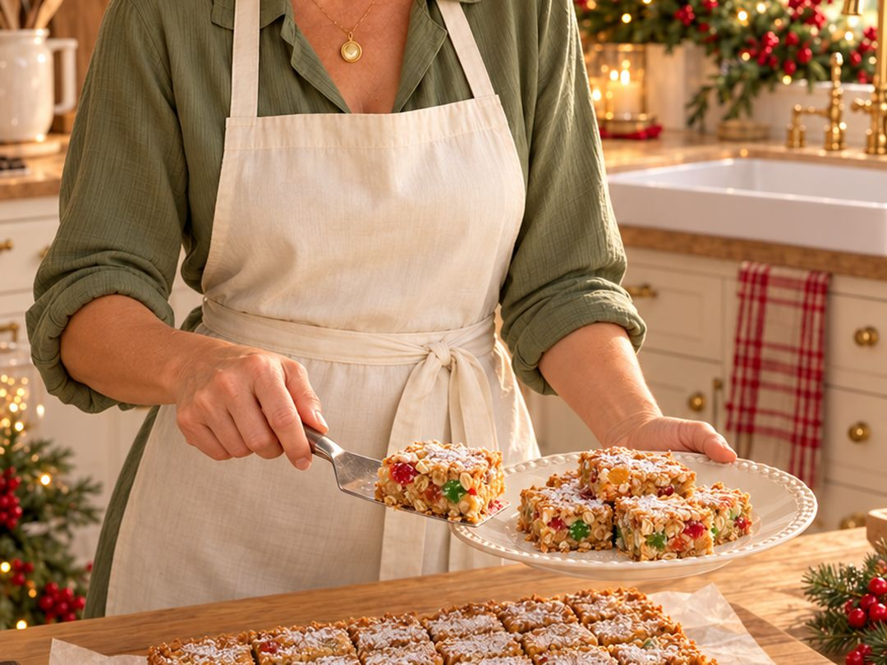

Old-fashioned favourite · 9 × 9 pan
Christmas Gumdrop Bars
They look fancy. They are not. Don't tell anyone. Chewy oat and coconut squares, studded with jewel-bright gumdrops and finished with a snowfall of icing sugar. I've made these for years. These days they're too sweet for me, so I bake them for everyone else and watch them vanish.

Ingredients
- ⅓ cup butter or margarine
- ⅓ cup packed brown sugar
- ½ cup granulated sugar
- 2 eggs, beaten
- ½ teaspoon vanilla
- 1 cup all-purpose flour
- 1 cup rolled oats
- ½ teaspoon baking powder
- ½ teaspoon baking soda
- ¼ teaspoon salt
- ½ cup sweetened coconut
- ½ cup chopped gumdrops (no black ones!)
- Icing sugar, for dusting
Instructions
- Preheat the oven to 350°F (175°C) and grease a 9 × 9-inch pan.
- Cream the butter, brown sugar and granulated sugar together well.
- Beat in the eggs and vanilla.
- Add the rest: flour, salt, oats, baking powder, baking soda, coconut and chopped gumdrops. Mix it all together.
- Press the mixture evenly into the pan.
- Bake for 25 to 30 minutes, until golden.
- When cool, sift icing sugar over the top and cut into 36 squares.
Leave out the black gumdrops. Nobody has ever missed the licorice! And wait until the bars are completely cool before you add the icing sugar, so it sits on top like fresh snow.
Good to know
Chopping gumdrops
Gumdrops are sticky. Snip them with kitchen scissors dipped in a little flour or lightly oiled, then toss the pieces in a spoonful of the recipe's flour. That stops them clumping together and helps them spread through the batter. Many Canadian grocery stores also sell small "baking gums," which save you the chopping.
Storing
Store the bars in an airtight container at room temperature for up to 5 days. Keep the icing sugar for the day you serve them, as it soaks in over time.
Freezing
Freeze the cooled bars before dusting, wrapped well or in a freezer container, for up to 3 months. Thaw at room temperature, then sift on fresh icing sugar.
Swaps
Butter gives the richest flavour, but margarine works well. Leave out the coconut if your family doesn't care for it, and add a little extra rolled oats instead.
Questions people ask
Why are they called gumdrop bars?
They're an old-fashioned Christmas square built around chopped gumdrops, which look like little jewels when you cut into them. You'll see them on many traditional Canadian cookie trays, sometimes called gumdrop squares.
Why leave out the black gumdrops?
Black gumdrops are licorice-flavoured, and that flavour takes over the whole square. Stick with the fruity colours.
Can I make these ahead for Christmas?
Yes. Bake and freeze them up to 3 months ahead, then dust with icing sugar after thawing.